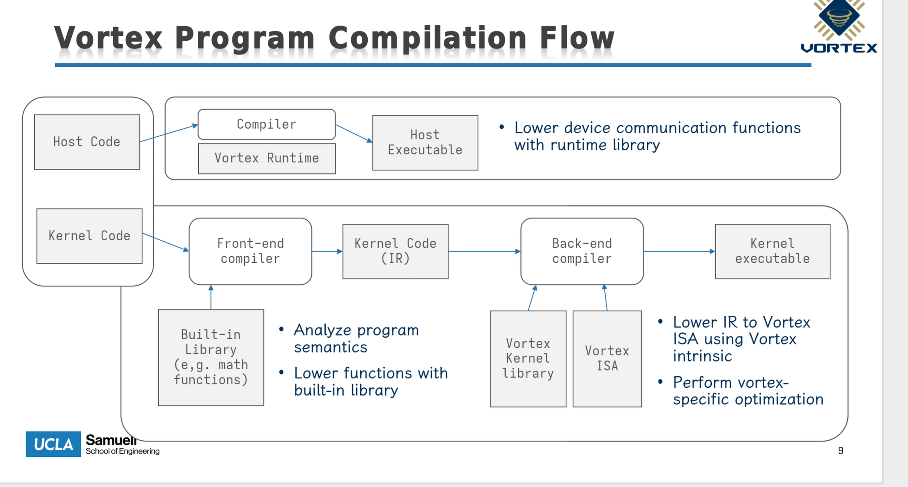

GPU 进阶（二）接入 Vortex¶
主要贡献者
- 作者：@caspian
背景介绍¶
背景介绍见 CPU 方向。
专业阶段¶
本文记录 GPGPU 方向专业阶段的进阶实验二。
根据实验要求，我们需要
- 将之前手写的 c model 替换为 vortex 项目下的 simx 模拟器；
- 将之前写的 gpgpu driver 和 vortex 的 pocl 运行时对齐；
- vortex 在 bar2 空间中预期的数据格式与我们之前自己拍脑袋设置的，可能不一样
- 编译 vortex/tests/opencl/sgemm，并运行在 arceos + qemu + simx 中。
为了兼容 vortex, 我们首先需要了解 vortex 软件栈的设计哲学。可以参考官方教程 vortex tutorial 进行学习。
vortex 软件栈介绍¶
vortex 是一个开源的 RISC-V GPGPU 硬件/软件项目，包含 RTL，仿真器，支持 OpenCL 和 CUDA。为了理解 vortex 软件栈的搭建，我们可以回顾在 arceos 实现的简易软件栈：
- 底层是 Qemu 模拟的 gpgpu 编程模型；
- 再上层是 arceos 与 gpu 交互的驱动层 (gpgpu_malloc ...)；
- 再上层是为更好的与 gpu 交互，所实现的运行时库 (operator, buffer)；
- 最上层提供编程前端，实现一些 kernel (program running on gpu)，然后用 rust 使用运行时库加载这些算子完成一个测试 demo：gpu-demo 完成三个算子的基本测试，lenent-demo 完成简单训练 (orchistrate on cpu)
vortex 的软件栈其实也类似，这里以 OpenCL 为例进行讲解

- 底层 simx/vortex rtl 提供 gpgpu 硬件模型
- 再上层 vortex 提供 vortex runtime lib(libvortex.so)，提供执行后端与 GPU 交互 API (比如 vx_malloc)，然后根据用户指定的执行后端（rtl/simx/fpga）再转发到真正的功能函数
- 比如 VORTEX_DRIVER=simx，libvortex.so 会打开 libvortex-simx.so，然后将逻辑转到 simx 模拟器中
- 再上层 OpenCL 提供了应用层 (例如 sgemm) 和 GPU 交互的 API (clGetPlatformIDs)
- 最上层提供编程前端，vortex 为了兼容 OpenCL 和 CUDA 生态，编程前端的机制会比较复杂，分别介绍 GPU 和 CPU 负载编译
- GPU 上运行的程序：通过 POCL 使用魔改的 llvm 生成 vortex-compatible 的指令流，然后和 vortex kernel lib 链接 (libvortex.a，提供对 GPU 设备端的支持)
- CPU 上运行的程序：在编译时，会链接 libOpenCL.so, 会使用 POCL vortex backend 将实现转发到下层的 vortex runtime lib
CPU 和 GPU 负载完整的编译流水线
通过对比可以看出，除了没有封装好的算子 (例如conv2d_3x3)，arceos 简易的四层抽象可以和 vortex 一一对应。
接入 Vortex 软件栈生态¶
兼容 OpenCL¶
原生编译运行 sgemm 时，需要链接 libOpenCL.so 库，这个动态链接库默认依赖很多 linux 原生的基础设施，比如完整的 libc, thread 库。在 arceos 这样一个 unikernel 上做显得有些困难。所以在兼容 OpenCL 这个问题上，我的决策是绕过 libopencl.so，自己重新编写一个 opencl 库，实现的功能比较简单，只是做纯粹的路由，将 OpenCL API 路由到 arceos 为 OpenCL 实现的一套 axcl_vx_* C ABI。
unikernel: 操作系统和应用程序一起构建，共享一个地址空间
| OpenCL API | → 实际调用 |
|---|---|
clCreateContext() |
axcl_gpu_init() → 初始化全局 GpgpuContext |
clCreateBuffer() |
axcl_vx_mem_alloc(size) → 分配 VxBuffer |
clBuildProgram() |
axcl_vx_upload_kernel_bytes(embedded .vxbin) |
clEnqueueNDRangeKernel() |
构造 PoclKernelArgs → axcl_vx_upload_bytes(args) → axcl_vx_start(kernel, args) |
clEnqueueWriteBuffer() |
axcl_vx_copy_to_dev(buffer, offset, data) |
clEnqueueReadBuffer() |
axcl_vx_copy_from_dev(dst, buffer, offset) |
clFinish() |
axcl_vx_ready_wait() |
本文从 arceos 侧 (rust) 和 应用侧 (cpp) 分别举例，并说明最终如何进行链接。
Rust 侧 (axlibc/src/gpgpu_ffi.rs):
#[unsafe(no_mangle)]
pub unsafe extern "C" fn axcl_vx_mem_alloc(size: size_t) -> *mut c_void {
with_context(|ctx| {
let buf = ctx.vx_mem_alloc(size);
Box::into_raw(Box::new(buf)) as *mut c_void
})
}
- #[no_mangle] — ABI 层面：告诉 Rust 编译器不要做 name mangling，最终符号名就是
axcl_vx_mem_alloc，不是 Rust 的_ZN...。 - extern "C" — ABI 层面：使用 C 调用约定（RISC-V 上参数走 a0-a7，返回值走 a0），而不是 Rust 默认的未稳定调用约定。
- 返回 *mut c_void — 这是一个 opaque pointer（不透明指针），C 侧只能拿着它，不能解引用。
C++ 侧 (opencl_stub.cc):
extern "C": ABI 层面：告诉 C++ 编译器这个符号是 C 链接、C 调用约定，不要生成 C++ name mangling。- 返回
void*: 与 Rust 的*mut c_void等价。
链接时，C++ 编译出的 .o 里有一个未定义符号 axcl_vx_mem_alloc，Rust 编译出的 .o 里定义了这个符号，链接器把它们粘合
兼容 vortex 生态实现的设备驱动 API¶
axcl_vx** 实际上会调用为兼容 vortex 生态实现的一系列设备驱动 API
libgpgpu 方法 |
说明 |
|---|---|
vx_mem_alloc(size) -> VxBuffer |
分配 device buffer |
vx_mem_address(&buffer) -> u64 |
返回 kernel 参数里使用的 device address |
vx_copy_to_dev(&buffer, offset, data) |
上传输入矩阵等数据 |
vx_copy_from_dev(dst, &buffer, offset) |
下载输出矩阵等结果 |
vx_upload_bytes(data) -> VxBuffer |
上传参数结构体 |
vx_upload_kernel_bytes(vxbin) -> VxKernel |
上传 .vxbin kernel image |
vx_start(&kernel, &args) |
启动 Vortex 程序 |
vx_ready_wait() |
等待 GLOBAL_STATUS.BUSY 清除 |
// 重要功能函数
vx_mem_alloc(size):
→ 分配 dev_addr（从 VORTEX_ALLOC_BASE = 0x00010000 递增）
→ 分配 BAR2 staging 区空间（从 VORTEX_STAGING_OFFSET = 0x02000000）
→ 登记 image table mapping: {dev_addr → vram_offset}
vx_upload_kernel_bytes(vxbin):
→ 解析 .vxbin 头部 min_vma / max_vma
→ 把 payload 拷贝到 BAR2 staging 区
→ 登记 image VMA mapping
vx_start(kernel, args):
→ 写 QXBV image table（magic/version/num_entries/entries）
→ REG_KERNEL_ADDR = kernel.entry | VORTEX_MODE_FLAG (1<<63)
→ REG_KERNEL_ARGS = args.dev_addr
→ REG_DISPATCH = 1 // ← 触发 QEMU 后端执行
核心：BAR2 staging 区是 OS driver 和 QEMU/SimX 之间的 staging medium，SimX 在 launch 时把 staged 内容拷贝到 Vortex 自己的 RAM/VMA 空间。
目前的 bar2 地址空间分布
BAR2 布局（64MB VRAM）：
BAR2 / VRAM
0x00000000 ─────────────────────────────────────────
旧 raw GPGPU 兼容区
0x000000f0: raw args
0x00001000: raw data buffers
0x00100000: raw kernel region
0x02000000 ─────────────────────────────────────────
Vortex staging region
- .vxbin image payload
- vx_mem_alloc() 分配的数据 buffer
- vx_upload_bytes() 上传的参数结构体
0x03ff0000 ─────────────────────────────────────────
Vortex image table
header: magic/version/num_entries/reserved
entry[]: { vma, vram_offset, size }
0x04000000 ─────────────────────────────────────────
BAR2 end (64MB)
QEMU 设备模型¶
PCI 0x1234:0x1337
BAR0 = 1MB control MMIO
BAR2 = 64MB VRAM
BAR4 = 64KB doorbells
gpgpu_ctrl_write(addr, val):
case REG_DISPATCH:
→ gpgpu_core_exec_kernel(s)
→ s->status = READY
gpgpu_vram_read/write:
→ VRAM 直读直写（OS 通过它搬运 staging 数据）
SimX 后端 — gpgpu_core.c → libvortex-simx.so¶
gpgpu_core_exec_kernel():
→ dlopen("libvortex-simx.so")
→ simx_raw_launch(vram_ptr, vram_size, kernel_addr, args_addr,
grid_dim, block_dim, max_cycles)
SimX 内部：
DISPATCH:
└─ 检测 VORTEX_MODE_FLAG
└─ 读 QXBV image table（从 BAR2 staging 区）
└─ 按 VMA mapping 把 .vxbin + buffers 装载到 SimX 内部 RAM
└─ 解析 startup argument（PoclKernelArgs）
└─ 执行 Vortex processor（RISC-V SIMT）
└─ 结果写回 BAR2 staging 区对应的 vram_offset
└─ 清除 BUSY 状态
完整数据流¶
以 SGEMM 一次 launch 为例
Guest DRAM BAR2/VRAM SimX RAM
│ │ │
A/B 矩阵 ──clEnqueueWrite──→ staging buffers ──→ 按 dev_addr 映射
│ axcl_vx_copy_to_dev │ (launch 时) │
│ │ │
.vxbin ──clBuildProgram──→ staging region ────→ 按 VMA 装载
│ axcl_vx_upload_kernel_bytes │ (launch 时) │
│ │ │
PoclKernelArgs ──vx_start──→ staging + image ──→ startup arg ptr
│ vx_upload_bytes │ table │
│ │ │
│ REG_DISPATCH=1 ───→ SimX launch ────────→ 执行 sgemm
│ │ │
│ │ 结果 ←──────────┘
│ │ │
│ ←──clEnqueueRead─────┘ │
│ axcl_vx_copy_from_dev │
↓ ↓ ↓
CPU 验证 PASSED!
整体分层架构（自顶向下）
┌─────────────────────────────────────────────────────────────┐
│ ① 应用层：tests/opencl/sgemm/main.cc │
│ (标准 OpenCL host 程序) │
├─────────────────────────────────────────────────────────────┤
│ ② OpenCL 兼容层：opencl_stub.cc + CL/opencl.h │
│ (把 OpenCL API 路由到 axcl_vx_* C ABI) │
├─────────────────────────────────────────────────────────────┤
│ ③ Rust FFI 层：axlibc::gpgpu_ffi │
│ (全局 GpuState → GpgpuContext) │
├─────────────────────────────────────────────────────────────┤
│ ④ Runtime 层：libgpgpu::GpgpuContext │
│ (vx_mem_alloc / vx_upload_kernel_bytes / vx_start 等) │
├─────────────────────────────────────────────────────────────┤
│ ⑤ Driver 层：axgpgpu::GpgpuDevice │
│ (Vortex ABI：BAR2 staging + image table + MMIO 寄存器) │
├─────────────────────────────────────────────────────────────┤
│ ⑥ QEMU 设备模型：hw/gpgpu/gpgpu.c │
│ (PCI 前端：BAR0/BAR2/BAR4 MMIO 读写 + DISPATCH 触发) │
├─────────────────────────────────────────────────────────────┤
│ ⑦ SimX 后端：hw/gpgpu/gpgpu_core.c → libvortex-simx.so │
│ (实际执行 Vortex kernel 指令) │
└─────────────────────────────────────────────────────────────┘
codex goal 模式¶
适配过程使用 codex /goal 模式完成，运行时间 3h
/goal 目前有一套支持 arceos 的gpgpu 软件栈运行在 qemu 中，现在我希望把 Vortex 的 simx 作为 GPGPU 的后端直接嵌入到 QEMU 中，替换当前的简化 cmodel，保留 gpgpu.c（PCIe 前端、BAR、寄存器、DMA），只把 gpgpu_core.c 的执行后端替换为 simx， 将 libgpgpu/驱动与 Vortex 的 POCL / OpenCL 运行时对齐，最终应该将 tests/opencl/sgemm/main.cc 运行在 arceos + qemu + simx 中
From vortex and beyond¶
vortex 本身¶
上面的教程只是对迁移的简单描述，还没有涉及到
- vortex 的架构设计
- simx 的架构设计
- LLVM 的自定义修改
- PoCL 实现
每一点都可以单开一篇博客来介绍了，可以之后慢慢探索。
真实世界¶
在我们理解了 vortex 之后，一定会想，vortex 已经比较复杂了，那它距离真实的 gpu 还有多大的区别呢，我们该如何融入复杂的现实生活？在现实生活中，提到 GPU 我们想到的就是图形渲染和 AI。 Vortex 距离这两个方向有多远呢？
以下内容为 AI-gen
真实世界应用
1. 图形渲染（OpenGL / Vulkan / DirectX）¶
Vortex 是纯计算设备（GPGPU），完全没有图形管线的固定功能硬件。真实 GPU 的渲染管线包含大量不可编程的固定功能单元：
| 缺失的硬件单元 | 作用 |
|---|---|
| Rasterizer（光栅化器） | 将三角形/图元转换成像素片元（fragment），确定每个三角形覆盖了屏幕上的哪些像素 |
| Depth / Stencil 测试单元 | 逐像素决定片元是否可见（遮挡剔除），是渲染正确性的核心 |
| Blending 单元 | 将片元颜色与 framebuffer 已有颜色混合（透明度、半透明） |
| Texture Sampler（纹理采样器） | 从贴图中插值读取颜色，支持滤波（双线性/三线性/各向异性）、mipmap、wrap/clamp 寻址模式 |
| Display Controller（显示控制器） | 从 framebuffer 定期扫描像素并编码成 HDMI/DP 信号发送到显示器。这是典型的"hard real-time"设备——60Hz 刷新率下每 16.6ms 必须输出一帧 |
| Command Processor（命令处理器） | 解析用户态的 command buffer（包含 draw call、状态切换），驱动整个图形管线。Vulkan 的 queue/command buffer 语义最终落在这里 |
| Tiling / Tile-based 渲染管理器 | 现代移动 GPU（Mali、Adreno）将屏幕分成 tile 在片上渲染，减少带宽需求 |
没有这些，Vortex 不能跑任何图形程序。不仅仅是 API 的问题——即使写一个 Vulkan 驱动，底层硬件根本不具备这些固定功能单元，软件模拟的光栅化/纹理采样/深度测试在性能上不可接受。
此外还需要图形 API 驱动的完整栈：
应用 (游戏/Blender/Chrome WebGL)
→ Vulkan / OpenGL / DirectX API
→ 用户态驱动 (ICD / Mesa gallium driver)
→ 内核态驱动 (AMDGPU / Nouveau / i915)
→ GPU 命令处理器 → 图形管线
当前 Vortex 只有最底层的一小部分（计算 dispatch），不具备任何图形 API 兼容性。
结论：图形渲染是 Vortex 不可能覆盖的方向。这不是缺几个软件库的问题，而是整个硬件架构的设计目标就不在此。
2. AI 训练和推理¶
与图形渲染不同，AI workload 本质上就是大规模矩阵/张量计算，和 Vortex 的设计方向一致。但距离生产级还有以下差距：
2.1 硬件层面¶
| 差距 | 说明 | 真实 GPU 的做法 |
|---|---|---|
| 无专用矩阵单元 | SGEMM 用通用 SIMT 指令逐元素计算，利用率低 | Tensor Core（NVIDIA）/ Matrix Core（AMD）是专用矩阵乘累加单元，一个指令完成 4×4 / 16×16 矩阵乘 |
| 无 HBM / 高带宽内存 | Vortex 走 PCIe BAR2（64MB），带宽受限 | 真实 GPU 使用 HBM2e/HBM3，带宽可达 2-3 TB/s，是显存和计算核心之间的关键瓶颈 |
| 有限的寄存器/共享内存 | Vortex 每个 lane 寄存器数固定且少 | 大寄存器文件 + 可配置 shared memory 是 GEMM 高性能的基石 |
| 无缓存层次 | 直接读写 DRAM | L1/shared memory → L2 → HBM 三级层次，tiling 算法依赖 shared memory 减少全局访问 |
| 无稀疏计算支持 | 只能处理稠密矩阵 | Ampere+ 的稀疏 Tensor Core 直接支持结构化稀疏（2:4 稀疏率） |
| 无高效低精度支持 | 只有 FP32 | FP16 / BF16 / INT8 / INT4 是 AI 训练推理的核心数据类型——不仅减少带宽，还翻倍算力 |
2.2 软件栈层面¶
| 缺失层 | 作用 | 真实 GPU 中对应的组件 |
|---|---|---|
| 高性能 BLAS / DNN 库 | 提供调优后的 GEMM、卷积、归一化等原语 | cuBLAS、cuDNN、rocBLAS、oneMKL |
| 算子融合编译器 | 将多个 kernel（如 conv + bias + relu）融合为单次 launch，减少全局内存往返 | XLA、TVM、Triton、TensorRT、IREE |
| 自动混合精度训练 | 自动在 FP32/FP16/BF16 间切换 | AMP（PyTorch）、Automatic Mixed Precision |
| 分布式通信库 | 跨 GPU 的 all-reduce / broadcast | NCCL、RCCL、oneCCL |
| 内存池 / 回收机制 | 共享显存、减少碎片、支持虚拟地址 | CUDA 虚拟内存管理、统一内存 |
| Profiling / 调试工具 | 分析 kernel 执行时间、带宽利用率、分支发散等 | NVIDIA Nsight、rocProf、Tracy |
| 框架适配层 | 让 PyTorch / TensorFlow 能通过你的硬件执行 | CUDA backend、ROCm backend、OpenCL backend |
2.3 Vortex 的位置¶
以上差距可以分成两类：
A. 强度问题——可以靠软件/微架构改进弥补： - 缓存层次、共享内存大小——属于硬件设计时的参数配置，可以调整 - FP16/BF16 支持——需要增加硬件数据类型，是工程问题 - BLAS/DNN 库——需要投入工程人力编写和优化 - Profiling 工具——纯软件工作 - 框架适配——绑定到 OpenCL 或直接写 Pytorch 的 custom backend 即可
B. 结构性问题——架构上不支持： - Tensor Core——Vortex 的 SIMT 架构不支持 warp-level 矩阵乘法指令。需要额外添加 MMA（Matrix Multiply-Accumulate）单元 - HBM 接口——PCIe BAR 方式是演练用的，生产环境需要物理上不同的内存控制器 - 稀疏计算——需要硬件索引支持 - 分布式通信——Vortex 没有多芯片互联接口
Vortex 本质上适合跑中小规模的计算型 AI 负载（推理为主），与生产级 GPU 的差距更多在规模和效率上，而不是"能不能跑"的问题。
3. 各领域成熟度总览¶
| 方向 | 成熟度 | 说明 |
|---|---|---|
| 传统图形管线（OpenGL/Vulkan） | 极其成熟（35+ 年） | 固定功能硬件设计已固化，没有颠覆性变化的空间。Vortex 不会走这条路 |
| GPGPU 计算模型（CUDA/OpenCL） | 非常成熟（15+ 年） | SIMT 模型、warp 调度、内存模型已标准化。Vortex 在此框架内 |
| GPU 硬件设计方法学 | 快速增长 | Chisel/HLS-based design（Vortex 本身就是例子）、MLIR-based hardware generation（CIRCT）正在改变硬件开发速度 |
| AI 编译基础设施 | 快速发展 | MLIR / IREE / TVM / Triton 每年都在快速迭代。这使得定向新硬件的成本越来越低——写一个 MLIR backend 比写全栈 OpenCL 驱动轻量得多 |
| AI 推理芯片 | 爆发式增长 | 大量 RISC-V + NPU 组合的创业公司出现。Vortex 在此赛道上是一个不错的教学/原型起点 |
| AI 训练基础设施 | 高度集中 | NVIDIA CUDA 生态占绝对主导（cuBLAS/cuDNN/NCCL/TensorRT），ROCm 在追赶。新硬件进入训练场景需要极高的兼容成本 |
| GPU 调试/性能分析工具 | 成熟但封闭 | NVIDIA Nsight 功能极强但闭源；开源侧 Tracy 发展很快 |
| RISC-V 向量扩展（RVV） | 快速标准化中 | RISC-V Vector Extension v1.0 已冻结，硬件实现和编译器支持正在快速跟进——未来可能模糊 "CPU vector" 和 "GPU SIMT" 的边界 |
总的来看：Vortex 在当前状态下做图形渲染是方向错误，做 AI 推理加速是合理但需要大量工程投入的方向。而 AI 编译器基础设施（MLIR、Triton、IREE）的快速发展，正在降低为 Vortex 这类新硬件写完整软件栈的门槛——这可能比补硬件本身的坑更快。
总结¶
进阶实验二围绕 Vortex simx 集成、OpenCL/POCL 运行时适配和 QEMU 设备模型对接展开，重点是把教学 GPGPU 设备从自定义软件栈推进到更接近真实生态的执行路径。